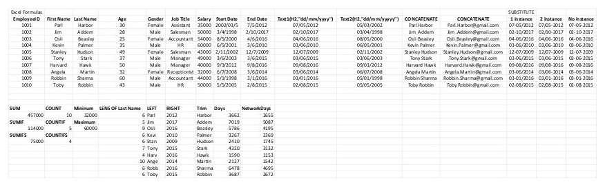
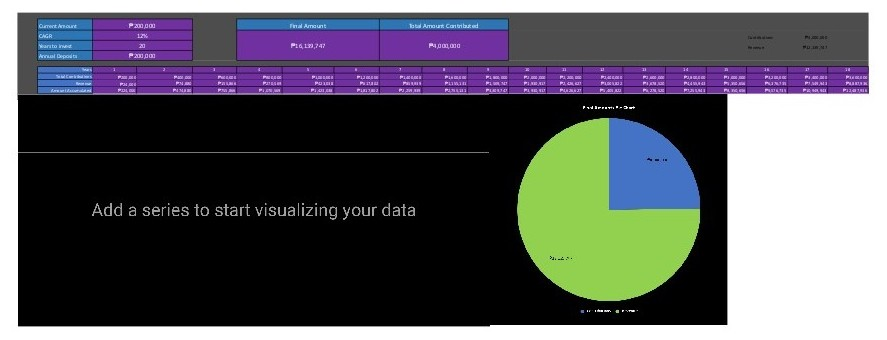
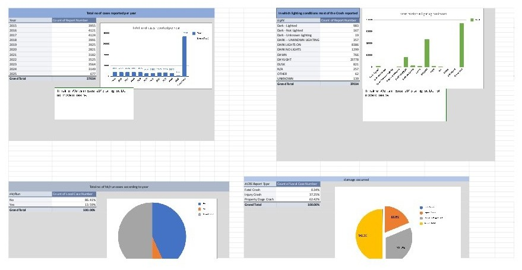

Selected Excel projects focused on reporting speed, accuracy, and decision support.
All sample links open in a new tab.
Category: Dashboarding | Tool: Excel | Use case: Sales reporting
Built an Excel dashboard from linked coffee shop datasets to analyze sales patterns, product performance,
and customer behavior.
What I Did
- Linked orders, products, and customer tables
- Standardized fields for clean analysis
- Built Pivot-based revenue trend views
- Ranked top customers by sales
- Summarized demand by roast type
Tools
Excel
Pivot Tables
Data Cleaning
Data Modeling
Dashboarding
Outcome: month-end analysis turnaround improved by ~40%.
Open spreadsheet (new tab)
View project breakdown
- Created calculated fields and structured analysis tables
- Used Pivot Tables to analyze monthly and yearly revenue trends
- Evaluated product performance by coffee type and roast level
- Generated aggregated reports for business decision-making
- Designed a management-level dashboard for leadership reporting
Category: Customer Analytics | Tool: Excel | Use case: Buyer segmentation
Built a customer analytics dashboard to identify demographic factors most associated with bike
purchases.
What I Did
- Prepared demographic purchase dataset
- Built age bracket segmentation columns
- Compared purchases by gender and income
- Analyzed commute and ownership effects
- Profiled high-likelihood bike buyers
Tools
Excel
Segmentation
Comparative Analysis
Pivot Tables
Dashboarding
Outcome: improved buyer-segment clarity for marketing planning.
Open spreadsheet (new tab)
View project breakdown
- Cleaned and prepared demographic data (income, age, education, commute distance)
- Organized the dataset into a structured analysis worksheet
- Analyzed marital status, occupation, and number of cars against purchase behavior
- Built summary tables for average income and purchase trends
- Designed a dashboard to present customer insights visually
Category: Data Cleaning | Tool: Excel | Use case: Business insight reporting
Cleaned and analyzed a structured buyer dataset to produce clear summaries and actionable reporting
insights.
What I Did
- Removed duplicates and format issues
- Structured fields for consistency
- Built Pivot-based metric summaries
- Derived indicators with formulas
- Published decision-ready summary reports
Tools
Excel
Data Prep
Formulas
Pivot Tables
Reporting
Outcome: improved report consistency across periods.
Open spreadsheet (new tab)
View project breakdown
- Analyzed trends and relationships between variables
- Created additional performance indicators via calculated fields
- Built summary reports in interpretable, decision-friendly layout
- Developed a visual dashboard for stakeholder communication
Category: Automation | Tool: Excel | Use case: Employee data preparation

Used formula-driven transformations to standardize employee records and automate repetitive formatting
tasks.
What I Did
- Standardized dates using TEXT
- Merged names with CONCATENATE
- Normalized strings with SUBSTITUTE
- Generated formatted email outputs
- Structured sheets for reporting use
Tools
Excel
TEXT
CONCATENATE
SUBSTITUTE
Automation
Outcome: reduced manual formatting workload by ~50%.
Open spreadsheet (new tab)
View project breakdown
- Applied formula-based automation to improve data usability
- Prepared cleaned datasets for downstream business reporting
- Implemented consistent text/date standards across records
- Organized spreadsheet structures for long-term maintenance
Category: Financial Modeling | Tool: Excel | Use case: Investment forecasting

Built a financial projection model using compound interest and CAGR assumptions for long-term investment
scenarios.
What I Did
- Designed structured model input section
- Calculated future value projections
- Modeled annual contribution effects
- Built CAGR-based scenario outputs
- Produced summary growth views
Tools
Excel
Financial Modeling
Forecasting
CAGR
Scenario Planning
Outcome: clearer long-term planning using scenario-driven projections.
Open spreadsheet (new tab)
View project breakdown
- Applied time value of money concepts in spreadsheet form
- Structured outputs for interpretable investor-facing summaries
- Automated growth calculations from variable assumptions
- Built reusable framework for future financial comparisons
Category: Dashboarding | Tool: Excel | Use case: Road safety reporting

Analyzed multi-year crash records to identify trend patterns and support data-driven road safety
assessment.
What I Did
- Cleaned and structured raw crash data
- Handled missing categorical records
- Aggregated multi-year trend summaries
- Built Pivot charts for key factors
- Designed stakeholder-friendly dashboard views
Tools
Excel
Pivot Charts
Data Transformation
Descriptive Stats
Dashboarding
Outcome: faster safety trend reporting for non-technical stakeholders.
Open spreadsheet (new tab)
View project breakdown
- Examined time-based and environmental collision patterns
- Converted raw records into interpretable analytical summaries
- Built interactive views for decision-support discussions
- Maintained consistent quality controls across datasets
6 delivered Excel builds | Dashboards, automation, modeling.